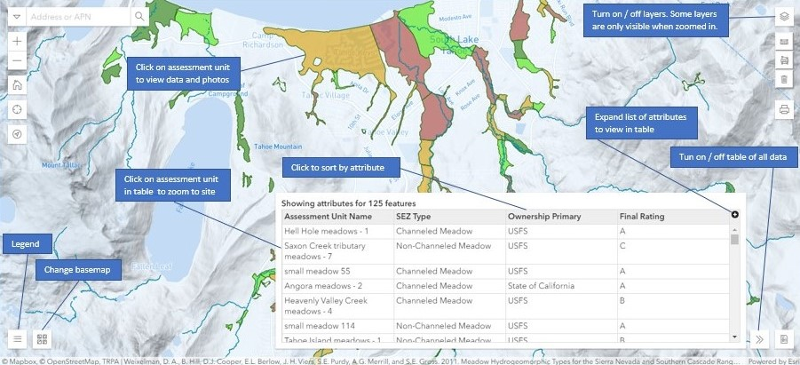

Use this application to visualize CURRENT CONDITIONS of stream environment zones, SEARCH for a meadow or stream, FILTER monitoring attributes, EXPLORE monitoring data such as streambank erosion and channel incision, LOCATE where you are, and TRACK where you've been.